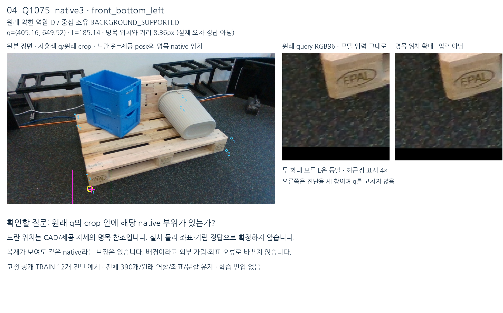
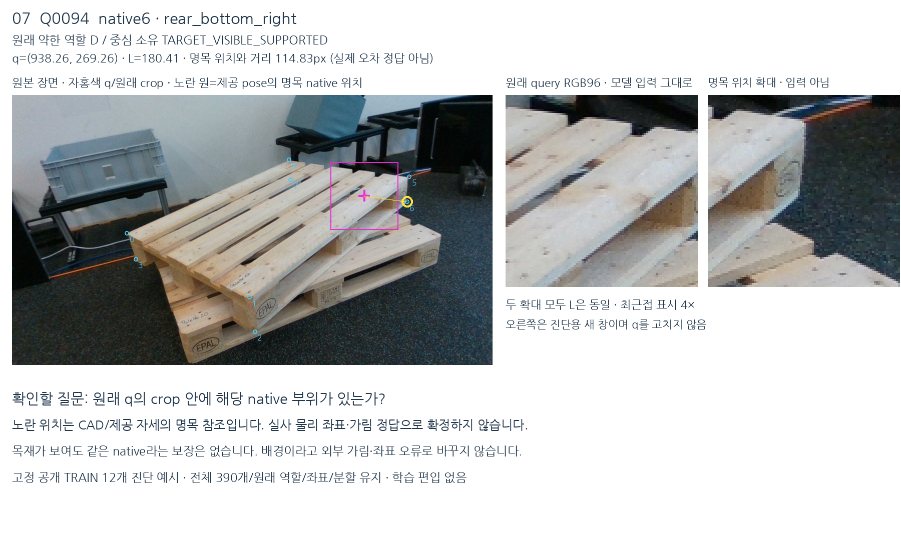
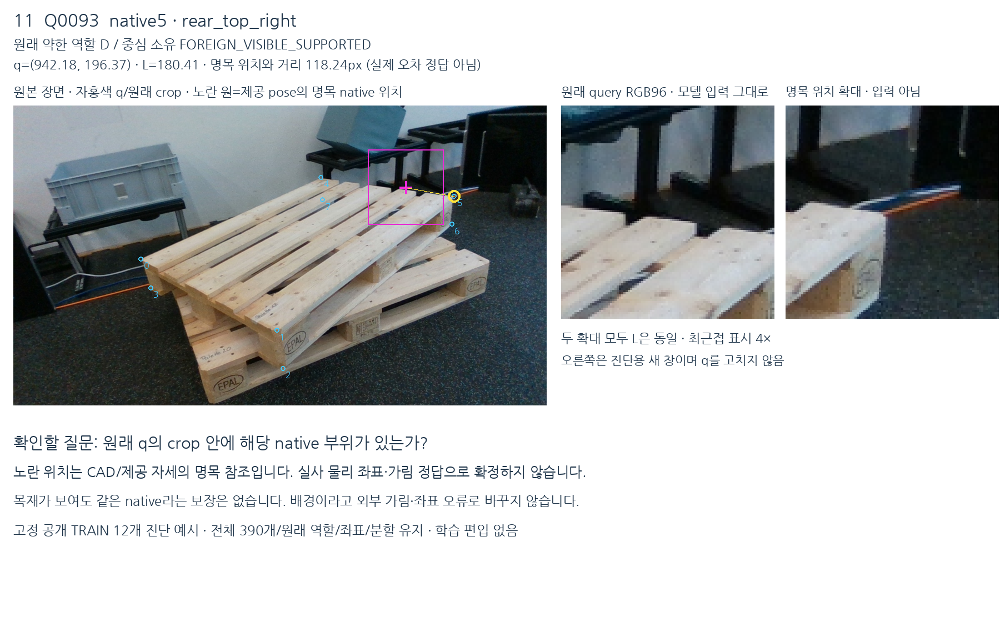
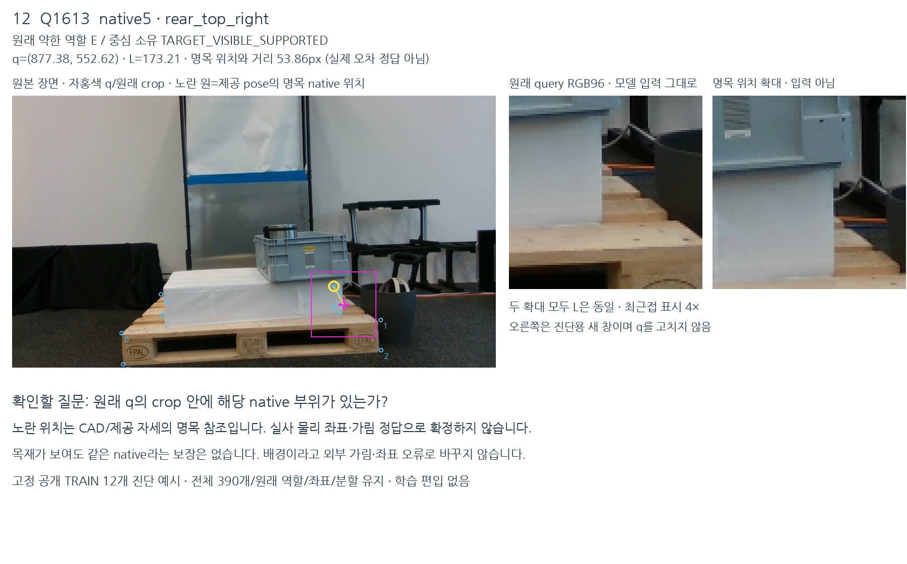

V159 · source 준비 완료 · 목표 미해결 · 새 모델 채택 없음
중심에 무엇이 보이는가와
원하는 키포인트 부위가 보이는가는 다릅니다
공개 TRAIN 390개를 같은 native/선택 인스턴스의 제공 CAD·자세·마스크와 대조했습니다. 중심 표면 정보는 별도 보조 감독으로 쓸 수 있도록 전체1840 슬롯에 연결했습니다. native D/E나 좌표 정답으로 바꾸지는 않았습니다.
실제 crop에서 확인한 네 가지 차이
자홍색은 원래 q와 crop, 노란 원은 제공 pose/CAD의 명목 native 위치입니다. 오른쪽 명목 위치 확대는 진단용 새 창이며 모델 입력이 아닙니다. 원래 좌표·crop은 그대로입니다.
Q1075: 중심은 바닥이어도 모서리는 보임

Q94: 목재가 보여도 원하는 부위와 다름

Q93: 보이는 native 부위와 초기 중심이 다름

Q1613: 중심 목재와 native E가 양립

사전에 고정한12개 중 네 사례입니다. 나머지까지 포함한 1페이지 · 2페이지 · 3페이지를 실제 확인했습니다. 이 관찰은 약한 장면 근거이며 정확한 native/물리 가림 정답이 아닙니다.
명목 부위가 원래 crop에 들어오는 범위
| 범주 | 전체 | 96 crop 안 | 중앙32 안 |
|---|
| 원래 약한 D | 341 | 319 | 242 |
|---|
| 원래 약한 E | 49 | 41 | 13 |
|---|
| 중심 TARGET | 53 | 47 | 32 |
|---|
| 전체 | 390 | 360 | 255 |
|---|
중심에 대상 목재가 있다고 관찰한53개도, 명목 native 위치는6개에서 원래 crop 밖이고21개에서 중앙32 밖입니다. 대상 목재 판별을 native 좌표/보임 정답으로 그대로 쓰면 안 되는 이유입니다.
포함 여부는 제공 CAD/자세에 따른 명목 계산입니다. 실사 좌표 오차나 물리 부위의 포함 여부를 인증하는 수치는 아닙니다.
CAD와 마스크가 주는 근거의 한계
제공 CAD에서는8개 nominal corner가 모두 실제 mesh 꼭짓점/표면에 있습니다. 빈 공간의 가상 CAD 점으로 확인된 것이 아닙니다. 다만 카메라에 따른 앞·뒤 native 이름은 과제의 V74 계약에서 온 것이며 MR6D 공식 점별 가림 어노테이션은 아닙니다.
선택 팔레트의 visible mask를 최근접 픽셀로 읽으면 q에서95/390, 명목 위치에서154/390이 닿습니다. 명목 위치의 bilinear 이웃 중 하나라도 닿는 경우243/390과 모두 닿는 경우59/390이 크게 다릅니다. 모서리와 raster 경계의 민감성으로, 마스크를 점별 정답으로 쓰기 어렵습니다.
88프레임 중42개는 visible instance mask끼리 겹칩니다. 마스크는 외부 화물 전체를 포함하지 않습니다. 마스크 밖을 배경이나 외부 가림으로 판정할 근거가 아닙니다.
원래390개 availability는 유지했습니다. Q1043은 최근접 픽셀을 읽을 수 있지만 원래 crop 중심4표본 중2개만 유효하여 owner UNKNOWN입니다. bilinear 이웃 전체가 영상 안인389개와 원래 available390개를 구분합니다.
MR6D 논문도 팔레트 치수의 cm 단위 차이와 정적 장면의 cm 수준 예상 정확도를 설명합니다. 이로부터 프레임별3px 보장이나 임의의 픽셀 오차 한계를 만들 수는 없습니다. 원 논문
실제로 준비한 학습자료
전체1840 슬롯을 보존한 별도 owner sidecar를 만들었습니다. 대상53 / 다른 물체52 / 배경148은253개의 약한 범주형 관찰이고, 나머지1587개는 UNKNOWN입니다. 공개 held360개도 모두 owner UNKNOWN으로 남겼습니다. 기존 native D/E·entity·좌표 품질 테이블은 변경하지 않았습니다.
390개의 원래 관찰은350개 단일 약검토,30개 세 관찰 일치,10개 불일치 정책 적용 이력을 그대로 유지합니다. 새 사람/정밀 native 좌표 정답을 만들거나 자동으로 학습에 편입한 것은 아닙니다.
현재 C37/C38의 시각 입력에는 native 순번이 명시적으로 들어가지 않고 G42는0입니다. 앞선 V133에서는 순번과 상대기하를 묶은 G42를 이미 다뤘습니다. 새로운 owner 관찰과 native 부위 판정을 분리해 시험할 근거가 준비된 상태입니다.
실용 성능 향상은 아직 미입증입니다. 다음 source 프로토콜에서 원래 목재·정사각형·native8 평가 범위를 유지해 검증합니다.